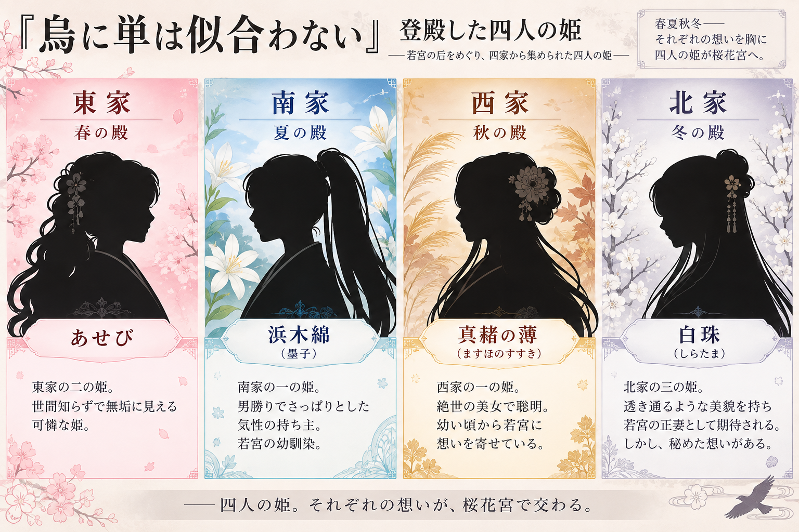
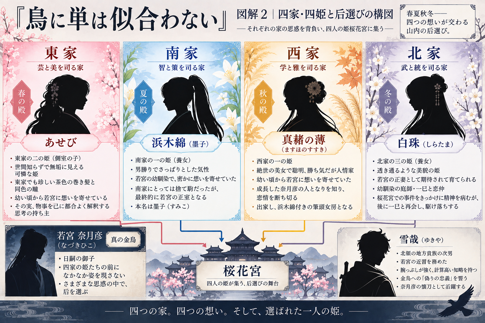

烏に単は似合わない（1）第一部（一）
后候補として集められた四人の姫を軸に、山内の宮廷をめぐる華やかな陰謀劇が始まる第1巻。
このページでは、『烏に単は似合わない』の物語を章ごとに振り返りながら、登場人物の行動や事件の流れ、物語の最後に明らかになる真相まで記録しています。
物語の結末を含むネタバレがあります。
① ストーリー
人間ではなく、八咫烏の一族が暮らす世界「山内」。
山内では宗家を中心として、東・西・南・北の四家が大きな力を持っている。
世継ぎである若宮・奈月彦の后を選ぶ「登殿」のため、四家から一人ずつ姫が桜花宮へと集められる。
東家のあせび。南家の浜木綿。西家の真赭の薄。北家の白珠。
四人はそれぞれ異なる家の事情と期待を背負い、「春の殿」「夏の殿」「秋の殿」「冬の殿」に入る。
ところが、后選びの中心人物であるはずの若宮は、一向に姿を現さない。
長引く登殿の中で、謎の手紙、侍女の失踪、桜花宮への侵入者など、不可解な出来事が次々と起こる。
そして次第に、四人の姫が表面上見せている姿とは異なる、それぞれの事情や思惑が明らかになっていく。
誰が若宮の后になるのか。それだけでは終わらない。
最後まで読むことで、物語の途中まで「そういう人物だ」と思っていた姫への見方さえ、大きく変わる物語となっている。

② あらすじ
松本清張賞を最年少で受賞、そのスケール感と異世界を綿密に組み上げる想像力で選考委員を驚かせた期待のデビュー作は、壮大な時代設定に支えられた時代ファンタジーです。
人間の代わりに「八咫烏」の一族が支配する世界「山内」では、世継ぎである若宮の后選びが今まさに始まろうとしていた。朝廷での権力争いに激しくしのぎを削る四家の大貴族から差し遣わされた四人の姫君。春夏秋冬を司るかのようにそれぞれの魅力を誇る四人は、世継ぎの座を巡る陰謀から若君への恋心まで様々な思惑を胸に后の座を競い合うが、肝心の若宮が一向に現れないまま、次々と事件が起こる。侍女の失踪、謎の手紙、後宮への侵入者……。峻嶮な岩山に贅を尽くして建てられた館、馬ならぬ大烏に曳かれて車は空を飛び、四季折々の花鳥風月よりなお美しい衣裳をまとう。そんな美しく華やかな宮廷生活の水面下で若宮の来訪を妨害し、后選びの行方を不穏なものにしようと企んでいるのは果たして四人の姫君のうち誰なのか？ 若宮に選ばれるのはいったい誰なのか？
あふれだすイマジネーションと意外な結末――驚嘆必至の大型新人登場にご期待ください。
④ 章ごとのストーリー
序章
物語の舞台となるのは、八咫烏の一族が暮らす世界「山内」。
山内では宗家のもと、東・西・南・北の四家がそれぞれ大きな力を持っている。
世継ぎである若宮・奈月彦の后を決めるため、四家から一人ずつ姫を送り出す「登殿」が行われることになる。
后に選ばれることは、単に若宮の妻になることだけを意味しない。自家から后を出すことができれば、朝廷におけるその家の影響力にも大きく関わる。
そのため、四家にとって登殿は政治的にも重要な意味を持っていた。華やかな后選びの裏側で、四家それぞれの思惑が動き始める。
第一章 春
春。四家を代表する姫たちが桜花宮へ集まる。
東家から登殿したのは、あせび。本来登殿するはずだった腹違いの姉・双葉に代わり、急きょ后候補となった。あせびは「春の殿」に入る。
南家からは浜木綿。男勝りでさっぱりとした性格を持ち、ほかの姫とは明らかに違う雰囲気を持っている。浜木綿は「夏の殿」に入る。
西家からは真赭の薄。絶世の美女であり、聡明で勝ち気。幼い頃から若宮を知り、彼への恋心を抱いている。真赭の薄は「秋の殿」に入る。
北家からは白珠。透き通るような白い肌と美しい黒髪を持ち、若宮の正妻となることを期待されて育てられた姫。白珠は「冬の殿」に入る。
こうして四人の姫による后選びが始まる。しかし、肝心の若宮は桜花宮へ姿を現さない。
第二章 夏
季節が夏になっても、若宮は四人の前になかなか姿を現さない。后候補として集められたにもかかわらず、若宮本人と会うことさえできない。
桜花宮という閉ざされた場所で時間だけが過ぎ、姫たちだけでなく、それぞれに仕える女房たちの間にも緊張が生まれていく。
大貴族としての教育を十分に受けていないあせびは、後宮の常識にも疎く、周囲から物笑いの対象となる。それでも、どんな時でも無垢な態度を崩さないあせび。
その姿は、気位の高い真赭の薄や、政治的な駆け引きを行う白珠、男勝りな浜木綿とは大きく異なって見える。
しかし、桜花宮では少しずつ不可解な出来事が起こり始める。誰が何を知り、誰が誰のために動いているのか。華やかな后選びの裏側に、不穏な空気が広がっていく。
第三章 秋
秋を迎える頃、后選びは単なる四人の姫の競争ではなくなっていく。
謎の手紙。侍女をめぐる不可解な出来事。桜花宮への侵入者。
一見すると無関係に思える出来事が次々と起こり、それぞれの姫が抱えていた秘密や事情も少しずつ見えてくる。
特に大きく揺れるのが白珠だった。白珠は北家の期待を背負い、若宮の正妻となるために育てられてきた。しかし、彼女には幼馴染で庭師の青年・一巳という想い人がいた。
やがて桜花宮に侵入した八咫烏が殺される。白珠は、その人物が一巳だったと思い込み、精神的に追い詰められていく。
后候補として振る舞ってきた白珠の姿は崩れ始め、その心の奥に隠していた一巳への強い想いが表面へと現れていく。
第四章 冬
冬を迎え、長期間にわたる登殿は大きく動き始める。
白珠をめぐる出来事。謎の手紙。桜花宮で起きたさまざまな事件。そして四家それぞれの思惑。これまで別々に見えていた出来事が、少しずつつながっていく。
白珠は後に一巳と再会する。自分が死んだと思っていた一巳が生きていたことで、白珠は「北家の姫として若宮の后になる人生」と「自分が本当に愛する一巳と生きる人生」の間で、改めて選択することになる。
若宮の後押しもあり、最終的に白珠は一巳とともに生きる道を選ぶ。
一方、ほかの姫たちについても、それまで読者が見てきた姿だけでは説明できない部分が見え始める。特に、常に無垢で純粋に見えていたあせび。彼女を中心として起きた出来事を振り返ることで、物語の見え方そのものが変化し始める。
第五章 再びの春
再び春を迎える。長く続いた后選びは、ついに決着へ向かう。
若宮・奈月彦は、単に桜花宮へ来ることを拒み、后選びを放置していたわけではなかった。四人の姫と、その背後にある四家。さらに桜花宮で起きていた出来事を見極めながら、自らの考えで動いていた。
そして、あせびをめぐる真相も明らかになっていく。
あせびは最後まで無垢な態度を崩さない。しかし、それまで起きた出来事を振り返ると、あせびに好意を抱いた者たちが彼女の利益になるように動き、その結果として破滅していったことが見えてくる。
あせび自身は、自分の行動を悪意あるものとして認識していない。むしろ、物事を自分にとって都合のよい形で受け取り、それを疑うことなく行動している。だからこそ、その無垢さが恐ろしく見えてくる。
そして、若宮の后選びは意外な形で決着する。その相手となるのが、南家から登殿した浜木綿だった。
浜木綿の本名は墨子（すみこ）。幼い頃、若宮から「すみ」と呼ばれていた幼馴染だった。
浜木綿は若宮を守るため、登殿の間もあえて妃として相応しくない振る舞いをしていた。南家にとっては若宮を誘き出すための捨て駒に過ぎなかった浜木綿だったが、最終的に若宮によって選ばれる。
浜木綿は「元南家」として入内し、奈月彦の正室となる道へ進む。
終章
后選びは終わった。東西南北の四家から集められた四人の姫のうち、最終的に若宮が選んだのは浜木綿だった。
しかし、この物語の核心は「誰が若宮の后になったのか」だけではない。最後まで読むことで、それまで見てきた人物や出来事の意味が変わってくる。
とりわけ大きいのが、あせびという人物への見方。最初は、世間知らずで純粋な少女に見えていた。しかし、その言葉や行動によって周囲の人間が動き、その結果として何が起こったのかを振り返ると、単純に「純粋な姫」として見ることができなくなる。
そして浜木綿もまた、単なる南家の后候補ではなかった。若宮と浜木綿の過去。浜木綿が登殿した本当の事情。若宮が后選びの間に何を考え、何をしていたのか。
第1巻を読み終えた時点でも、多くの「見えていない部分」が残されている。その裏側が、次巻『烏は主を選ばない』へとつながっていく。

⑤ この巻の重要点
1．最終的に若宮が選んだのは浜木綿
四家から四人の姫が集められた后選び。その最終的な結論として、若宮・奈月彦は浜木綿を選ぶ。
浜木綿の本名は墨子。幼い頃から奈月彦を知る「すみ」であり、二人は幼馴染だった。単なる南家の姫と若宮という関係ではなかったことが、后選びの結末に大きく関わっている。
2．四人の姫は、それぞれ異なる人生を選ぶ
あせび＝春の殿／浜木綿＝夏の殿／真赭の薄＝秋の殿／白珠＝冬の殿
春夏秋冬を思わせる四人は、后の座を競うために同じ桜花宮へ集められたが、それぞれが全く異なる結末へ進んでいく。
3．あせびの本当の恐ろしさ
あせびは、分かりやすく悪意を表に出す人物ではない。どんな時でも無垢に見える。
しかし、自分に都合のよい形で物事を解釈し、彼女に好意を持った者が結果として彼女のために動き、破滅していく。第1巻を読み終えてから序盤を振り返ると、あせびの言葉や行動が違ったものに見えてくる。
この読後に人物の印象が反転する構成が、第1巻の大きな特徴となっている。
4．白珠は「家」ではなく「自分の恋」を選ぶ
北家から若宮の正妻となることを期待され、そのために育てられた白珠。しかし、本当に愛していたのは幼馴染の一巳だった。最終的には若宮の後押しも受け、一巳とともに生きる道を選ぶ。
5．第1巻と第2巻は対になる
第1巻では、主に桜花宮と四人の姫を中心として后選びを見る。そのため、若宮がなぜ姿を見せなかったのか、その間に何をしていたのかなど、見えていない部分が残る。
第2巻『烏は主を選ばない』では、若宮と雪哉の側から同じ時期の出来事を見ることで、第1巻では見えなかった裏側が明らかになる。
第1巻と第2巻を合わせて読むことで、一つの大きな物語が完成する構成になっている。
⑥ 登場人物
奈月彦（なづきひこ）「真の金烏」
若宮・日嗣の御子であり、「真の金烏」とされる。
父は金烏代・捺美彦、母は側室である西家の姫・十六夜。母方の西家は美男美女が多いことで知られ、その血を受け継いだ端正な容姿を持つが、どこか掴みどころのない、達観した雰囲気を漂わせている。
「真の金烏」として博愛の心を持つ一方で、個人的な感情に乏しく、それを正しく理解する術も持ち合わせていなかった。祖父（先代金烏代・上皇）と母・十六夜を失ってからは、継承者争いに巻き込まれ、幾度となく命を狙われることとなる。自らの力を得るまでの間、兄の計らいによって暗殺の危険を逃れ、外界（人間界）の天狗のもとへ留学していた。
宮中では敵が多く、常に命を狙われる立場にある。また、本来であれば先代からの全記憶を引き継ぐはずの「真の金烏」でありながら、その記憶がなく、物語が進むにつれ、さまざまな板挟みに苦しむこととなる。
毒に対する耐性を持ち、多くの毒の味を覚えている。特に、大量に使用すると毒性を発する香「伽乱（かろん）」を自身もたびたび使用し、耐性をつけている。この伽乱は、協力者であり味方でもある兄・長束から送られ、入手していた。
雪哉（ゆきや）
本シリーズの主人公の一人。北領の地方貴族・垂氷郷郷長家の次男であり、北家当主の二の姫・冬木の一人息子。そのため、北本家においては次期当主およびその嫡男に次ぐ、第4位の立場にある。
家督争いを避けるため、あえて周囲には凡庸な人物と思わせているが、実際には腕っぷしの強さと計算高い知略を秘めている。
新年の席で、横暴な振る舞いを続けていた同じ北領の宮烏・和麿に策を巡らせて報復。その結果、和麿の代わりとして宮仕えをすることとなった。若宮の近習として一年間仕えた後、辞任して故郷・垂氷へ戻る。
大猿の襲撃事件を経て、寛烏八年に勁草院へ入峰し、寛烏十一年桜月に首席で卒業。山内衆となる。
本来は故郷・垂氷郷に尽くし、静かに生きることを望んでいた。しかし、山内の平和を守るために奈月彦へ忠誠を誓う。もっとも、それは奈月彦個人への忠誠ではなく、金烏への「偽りの忠義」だった。
奈月彦は雪哉の本心をすべて見抜いたうえで、巧みに彼を利用していく。奈月彦の懐刀として数々の功績を挙げる一方で、八咫烏と敵対する猿との戦いや、親しい者との死別、貴族たちとの謀略戦を経るうちに、感情を表に出すことが少なくなっていく。
そして、次第にそのやり方は苛烈さを増し、周囲との軋轢も深まっていくこととなる。巻を追うごとに、雪哉はよりダークな存在へと変貌していく。
浜木綿（はまゆう）
奈月彦の正室である「桜の君」。彼の幼馴染であり、密かに想いを寄せていた。女性としては背が高く、豊かな胸と腰回りを持つ見事な体躯の持ち主。しなやかな黒髪をたなびかせ、目鼻立ちのはっきりした、気の強そうな美人である。口調は男勝りで、さっぱりとした気性の持ち主。男装すると、背丈も相まって奈月彦にそっくりになる。
本名は墨子（すみこ）。幼少期には若宮とは悪友のような関係であり、彼が五～六歳の頃には「すみ」と呼ばれていた。前南家当主・融の兄である煒（ひかる）と、その母・夕虹の娘として生まれる。しかし、幼少期に同族内の政権争いに敗れ、本当の犯人が別にいたにもかかわらず、若宮の母・十六夜（いざよい）を殺めた罪を着せられ、両親を処刑される。
身分を剥奪されながらも生き延びるため、「墨丸」と名乗り、夕虹に付き従っていた青嵐という女房によって山烏の男児として、両親の墓がある南本家の菩提寺・慶勝院（けいしょういん）で育つ。お嬢様育ちではなかったため、人の痛みを理解する心を持つようになった。
その後、叔父が浜木綿を呼び戻して養女にし、「一の姫」として登殿させる。自分の実の娘・撫子の登殿を避けるため、あえてそのようにしたとされる。
登殿時には南家の一員として「夏の殿」に入るが、南家にとっては奈月彦を誘き出すための捨て駒に過ぎなかった。彼を守るため、あえて妃として相応しくない振る舞いをしていたが、最終的には「元南家」として入内する。
あせび
東家当主の二の姫。側室の子で、東家一族でも珍しい茶色の巻き髪に同色の瞳を持つ可愛らしい姫で、登殿時には「春の殿」に入る。
腹違いの姉・双葉に代わり登殿するも、大貴族に相応しい教養はおろか、世俗の常識にも欠け、後宮では物笑いの対象となる。
母親は、かつて東家代表として登殿した浮雲。楽人の多い東家でも弾くのが難しいとされる長琴（なごん）の名手。幼い頃に若宮と出会ったことがあり、その頃から思いを寄せている。
どんな時であっても無垢な態度を崩さないが、その実は、物事を己にとって都合のいい形でしか解釈できない思考の持ち主。あせびに好意を抱いた者は、彼女の利益になるように動かされた結果、破滅していく傾向にある。
奈月彦への入内が叶わなかった後、奈月彦の父にあたる捺美彦との間に一子（凪彦）をもうけ、夕蝉亡き後の大紫の御前となる。
異世界「山内」で悪魔の心を持ち、淫乱で、手段を選ばずに相手を蹴落としていく。
真赭の薄（ますほのすすき）
西家一の姫。若宮の母である十六夜と父親が兄妹のため、若宮とは従姉弟同士。登殿時には「秋の殿」に入る。
薔薇色の肌と赤みがかった黒髪を持つ、絶世の美女。聡明で勝ち気だが、人情家でもある。自尊心が強く、四家を代表して登殿した姫としての誇りを持つ一方、情に厚く、相手の立場や気持ちを理解して行動できる人物でもある。
幼少時に若宮と交流があり、以来恋心を抱いていたため、登殿時には若宮の正室になることを望んでいた。しかし、王の后となる器量・才能は認められつつも、成長した奈月彦の人となりを知ったことで恋情を断ち切り、出家して、入内した浜木綿付きの筆頭女房になることを決める。
登殿した四人の姫の中でも、物語の序盤では気位が高く、あせびとは対照的な人物として映る。しかし、物語が進むにつれて、表面的な華やかさや勝ち気な性格だけではなく、物事を冷静に見極める聡明さと、他者を思いやる人情深さが見えてくる。
若宮への長年の恋心を抱きながらも、自分が望んでいた未来だけに執着せず、現実を受け入れて自ら進む道を選択する。その潔さは、真赭の薄という人物を特徴づける重要な部分でもある。
その後は、奈月彦と浜木綿の娘である紫苑の宮の教育係を務める。
のちに澄尾と婚姻する。
白珠（しらたま）
北家の三の姫。丁寧に梳った黒髪と透き通るような白い肌を持つ、武門の家には似つかわしくないほどの美貌の姫。登殿時には「冬の殿」に入る。
北家の庶流貴族と、かつて北家代表として登殿した北家当主一の姫・六つの花との間に生まれた娘で、祖父母の養女となった。以後、若宮の正妻として相応しい養育を受け、周囲からも大きな期待を寄せられてきた。その自覚から、登殿の間は積極的に政治的な駆け引きを仕掛ける。
四人の姫の中でも、后候補としての立場を強く意識しており、北家の期待を背負って登殿した姫である。美しく気品があり、一見すると若宮の后を目指して迷いなく行動しているように見える。しかし、その内面には、北家の姫として求められる役割と、自分自身の本当の気持ちとの間に大きな葛藤を抱えている。
実は、幼馴染で庭師の青年である一巳と恋仲になっている。后候補として若宮の正妻になることを期待されながらも、その心は一巳に向けられており、この秘めた恋が白珠の行動と運命を大きく左右していく。
桜花宮に侵入して殺された八咫烏を一巳だと誤解し、精神を病んでいく。それまで保っていた后候補としての気丈な姿が崩れ、周囲から求められてきた「北家の姫」としての立場よりも、一巳への強い想いが表面に現れていく。
しかし、後に一巳と再会を果たす。最終的には若宮からの後押しを受けて、一巳と駆け落ちする。
白珠は、四家の期待を背負って后を目指す「冬の姫」として登場しながら、最後には家のために用意された人生ではなく、自分が本当に愛する人と生きる道を選ぶ。政略によって決められた人生と、自分自身の恋心との間で揺れ動く人物であり、その選択は第1巻の后選びを大きく動かす重要な要素となっている。
⑦ 感想
最初は、東西南北の四家から集められた四人の姫のうち、誰が若宮に選ばれるのかを描く「后選び」の物語として読み始める。
あせび、浜木綿、真赭の薄、白珠。性格も育った環境も、后を目指す理由も違う四人が集められ、春夏秋冬それぞれの殿で若宮を待つ。
ところが、肝心の若宮はなかなか現れない。その間に起きるさまざまな出来事を追っているうちに、「誰が后になるのか」だけではない物語であることが分かってくる。
特に印象が大きく変わるのが、あせびだった。最初は、宮廷の常識を知らない純粋な少女のように見える。だからこそ、自然とあせびを守られる側の人物として見てしまう。
しかし最後まで読むと、それまで何気なく読んでいた言葉や行動をもう一度振り返りたくなる。
一方、最初は気が強く近寄りがたく見えた真赭の薄や浜木綿についても、読み進めるにつれて違った一面が見えてくる。白珠についても、単なる后候補ではなく、家から与えられた人生と自分自身の恋との間で苦しんでいたことが分かる。
そして、最終的に若宮が選ぶのは浜木綿。浜木綿が幼馴染の「すみ」だったことまで分かると、后選びそのものの見え方も変わってくる。
さらに、この第1巻では若宮側で何が起きていたのかは十分に描かれていない。
「若宮は、四人の姫が待っている間に何をしていたのか？」
その疑問を残したまま、第2巻『烏は主を選ばない』へ進む。
第1巻を読んで第2巻を読み、そしてもう一度第1巻を振り返る。
同じ出来事でも、見る側が変われば全く違う物語に見える。
そこが、八咫烏シリーズの最初の二冊の大きな面白さだと思う。
『烏は主を選ばない』のあらすじ・章ごとのストーリーへ